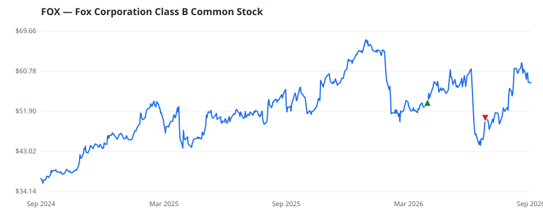

bullish · bearish · n/a — dots: price>SMA10 · SMA10>SMA50 · SMA50>SMA200 · up>down volume (20d)
Media & Entertainment · large cap
Members who bought FOX earned a dollar-weighted -5.9% from their disclosure dates, versus +13.0% for the S&P 500 over the same holding windows (-18.9% alpha).

▲ green = a disclosed purchase · ▼ red = a disclosed sale (plotted on disclosure date)
Fox operates in two segments: cable networks and television. Cable networks primarily includes Fox News, Fox Business, and several pay-TV sports stations. Television primarily includes the Fox broadcast network, 29 owned and operated local television stations, of which 18 are affiliated with the Fox network, and streaming platform Tubi, which is not subscription-based and is completely ad-supported. Fox effectively sold most of its entertainment assets to Disney in 2019, so it no longer creates entertainment content and relies heavily on live news and sports, with nearly all tied to the pay-TV TELEVISION BROADCASTING STATIONS · website
| Revenue | $16.3B | Net income | $2.3B |
|---|---|---|---|
| Operating income | $3.1B | Diluted EPS | $4.91 |
| Assets | $23.2B | Equity | $12.1B |
| Member | Chamber | Out-performer | Disclosed buys $ | Return on buys |
|---|---|---|---|---|
| Gilbert Cisneros | house | — | $8K | -5.9% |
Disclosed $ figures are bracket midpoints — filings report ranges (e.g. $1,001–$15,000), not exact amounts.
This name produced 0.0% of the ranked funds’ total alpha.
🛒 Newly buying: Duquesne Family Office LLC (+38%, 0.7% of book)
| Fund | Fund alpha vs SPY | Position | % of book |
|---|---|---|---|
| Hancock Prospecting Pty Ltd | +43% | $58M | 1.0% |
| Duquesne Family Office LLC | +38% | $30M | 0.7% |
| F&V Capital Management, LLC | +2% | $17M | 3.2% |
Hedge data: SEC EDGAR 13F · ranked funds beat SPY in >50% of their quarters · fund alpha = mirror-portfolio return minus SPY.